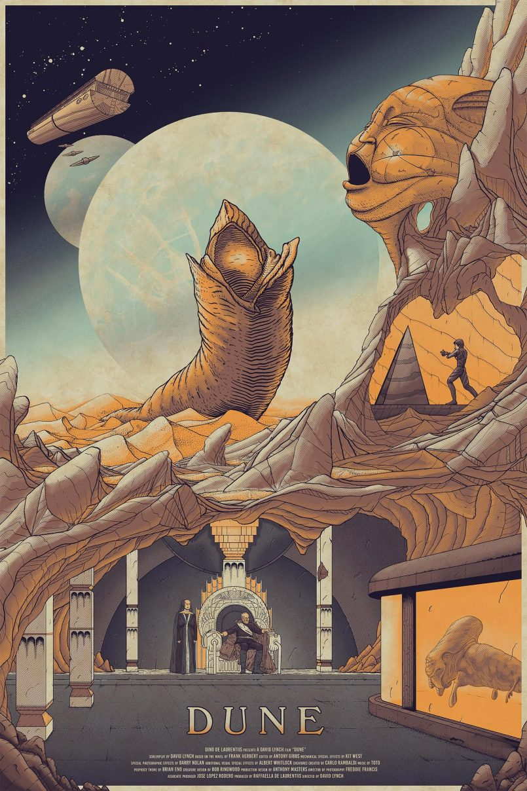

-
Back to the future

Marty McFly, a 17-year-old high school student, is accidentally sent 30 years into the past in a time-traveling DeLorean invented by his close friend, the maverick scientist Doc Brown.
-
Dune(1984)
A Duke's son leads desert warriors against the galactic emperor and his father's evil nemesis to free their desert world from the emperor's rule.
-
Bladerunnner2049

Young Blade Runner K's discovery of a long-buried secret leads him to track down former Blade Runner Rick Deckard, who's been missing for thirty years.